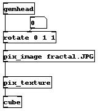

A simple example of texture mapping is the following patch:

This patch can be found at 07.texture/01.texture.pd. Change the number box connected to the rotate object to see what a texture map on a cube looks like.
The [pix_image] object loads in the fractal image file. The [pix_texture] object says that the pix data should be used as a texture map. Notice that this is different than the previous manual section when we used the [pix_draw] object. The final object in the chain is the [cube] object. Because we have enabled texture mapping with the [pix_texture] object, the cube takes the pix data and applies it to the geometry.

Texture mapping can be used with any GEM object. In the previous manual section, you saw how to load in pix data with a variety of objects, including [pix_multiimage] and [pix_video]. All of these objects can be used with the [pix_texture] object.
Because the pix data is applied to geometry, you can move, rotate, and scale the image. This is extremely useful on the [square] object. Instead of doing a one-to-one pixel mapping as occurs with the [pix_draw] object, you can resize and reshape the image.
OpenGL originally required that images must have dimensions that are power-of-2, such as 64, 128, or 256. This restriction has been released with recent gfx-cards (like some radeon/nvidia products). However, if the width or height of an image is not a power of two, then the [pix_texture] object will take care of this, and still render it (depending on you hardware with some tricks). You can thus texture images of any size, but since this is based on tricking the texture-coordinates, [pix_coordinate] might not give the wanted result any more.

The example patch 07.texture/02.moveImages.pd is a much more complex patch which uses alpha blending to create a transparent object, in this case, the dancer. Make sure to turn on the rotation with the [metro] object.
People have been asking how textures are handled in GEM. Here is a long explanation from an email which I wrote.
Here is how textures are dealt with under OpenGL and hardware accelerators. This can obviously change in the future, but right now, I am fairly certain that the info is correct (I make games in my day job, so I have vested interest in this :-)
The amount of memory (VRAM) on the card (12mb for Voodoo2, 16mb for TNT, 64mb for GeForce2, etc) is used for both textures (TRAM) and frame buffer space. If you have a large rendering window, like 1600x1200, it will take up 1600x1200x4x3 in 32-bit mode with double buffering and a Z buffer (or 23mb). Most people run at TV resolution, like NTSC, so it takes 640x480x4x3 = 3.7mb All of the space left is for textures onboard the card (FYI, if you have heard that people are having problems with the PlayStation2, notice that it only has 4mb of VRAM...not much onboard texture space, huh? :-) Thankfully it has an extremely fast DMA bus)
Sooo, when GEM "creates" a texture, it immediately tries to send the texture to the card, which uses some of the left over space in the VRAM. If you had a 640x480 window on a Voodoo2, you have ~8mb of texture space left over. On a GeForce2, ~60mb. The problem is what happens if you want more textures than can fit into TRAM. OpenGL requires that the video drivers deal with the problem, so GEM doesn't care too much (more about this later).
In most cases, the drivers cache the textures in main memory and if a texture is requested for rendering and it isn't resident on the card, it will download it. If you have AGP, then this is pretty quick, although none of 3dfx cards really take advantage of this (ie, those cards are about the same speed as the PCI bus). So depending on the number of textures, and how complex the scene is, you might be able to display more textures than you have TRAM.
One slowdown that can happen with GEM is that it makes a copy of the image before sending it down the chain of objects. If you are constantly changing images with a pix_multiimage, this can be a performance hit, but you can modify the actual pixel data with the pix objects. The pixels aren't sent to the graphics card until the pix_texture object is reached.
GEM tries to help with this with a few objects. pix_imageInPlace acts much the same as pix_multiimage, but it downloads _every_ image in the sequence to the card when a download message is recieved. It also immediately turns on texturing, instead of making a copy (ie, you don't need a pix_texture object). Much faster, but not as flexible. pix_movie does much the same thing. It sends the pixel data without copying it if there is a new frame to display.
The entire pix system uses a caching system so that the copying and processing only occurs if something actually changes. For example, if you had a pix_threshold object, it would only process when rendering started...and every time that the values actually changed. You can use pix_buf to isolate parts which don't change from those that do, but it involves another copy.
On the Voodoo2, the hardware itself limits textures to 256x256...this will never change. The newest Voodoo5 boards have a higher texture size.
If you load the _exact_ same image (this means the exact
same file/path name), then the pix_image has a cache system which means
that it is only loaded into the
computers memory once. However, each pix_image still sends
its own copy down to the gfx card.
You could use a single [pix_image]/[pix_texture] with [separator] to do this...I have done it a lot in the past.
The reason that [pix_image] doesn't share the actual texture data is that you can modify the pixel data with other pix objects...[pix_image] doesn't actually send the texture data to the gfx card, [pix_texture] does.